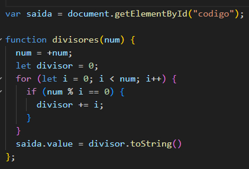
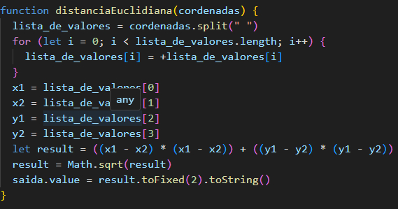
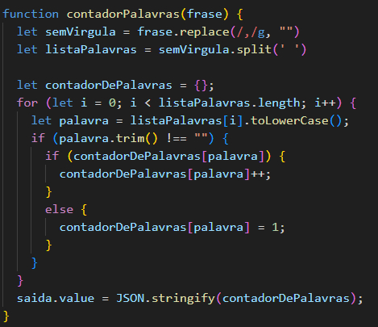
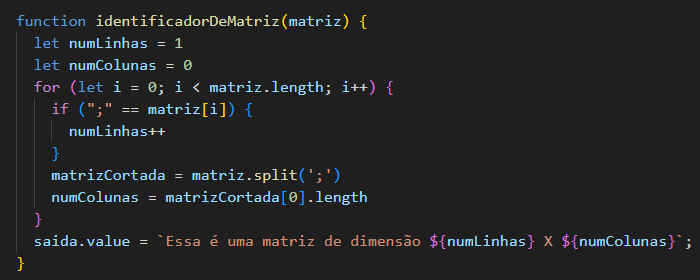
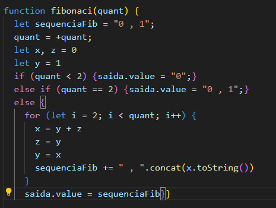

Nome: Vinícius F Frederico
Turma: 2023
1 - Escreva um programa que mostre a soma de todos os divisores de um dado número X. Um divisor é qualquer número menor que X cujo resto da divisão é igual a 0.
2 – Considere dois pontos no espaço 2D com as seguintes coordenadas: A(x 1 , y 1 ) e B(x 2 ,y 2 ). A distância euclidiana D, entre estes pontos é dada pela seguinte fórmula: Escreva um programa que calcule tal distância para coordenadas de dois pontos informados pelo usuário. (OBS: SEPARE OS 4 NUMEROS POR ESPAÇO)
3 - Dada uma frase de entrada por um usuário, faça um programa que conte a ocorrência de cada palavra nesta frase. O programa não deve distinguir letras maiúsculas e minúsculas.
4 – Faça um programa que leia uma string de números como entrada de um usuário que representa uma matriz e diga qual dimensão dela (quantidade de linhas e colunas). As linhas da matriz são separadas por um caractere de ponto e vírgula ‘;’e as colunas são separadas por um espaço vazio ‘ ’.
5 – Dado um número inteiro positivo N como entrada de um usuário, escreva um programa que mostre os primeiros N números da sequência de Fibonacci. (A sequência de Fibonacci é iniciada por 0 e 1, e o próximo número é sempre a soma dos dois últimos).
